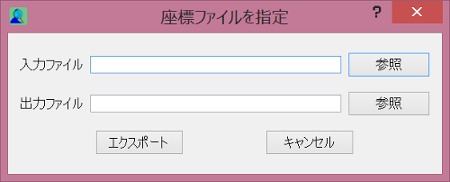

土地利用の算定を行うには、マップキャンバス上で算定の起点を指定する方法と地点が記述されたファイルを読み込む方法があります。
地点が記録されたファイルを読み込んで、それらの地点について一括して集計を行う場合は以下のボタンを押します。
ボタンを押すと以下のダイアログが表示されますので、入力ファイルと出力ファイルをそれぞれ指定します。 ファイル指定後、「エクスポート」ボタンを押すと、集計を開始します。
入力ファイルはID、経度、緯度が記述されているCSVファイルである必要があります。また、先頭の１行目はヘッダ行です。
| ID | 経度 | 緯度 |
| 1 | 139.86931 | 35.3316 |
| 2 | 139.9289 | 35.3777 |
| 3 | 139.9535 | 35.3981 |